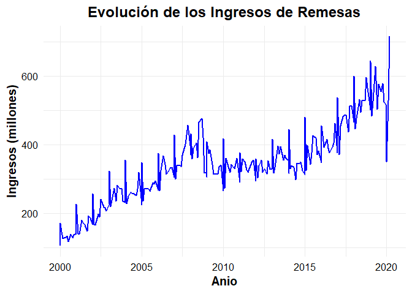
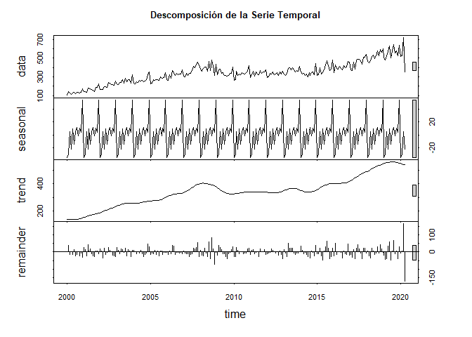
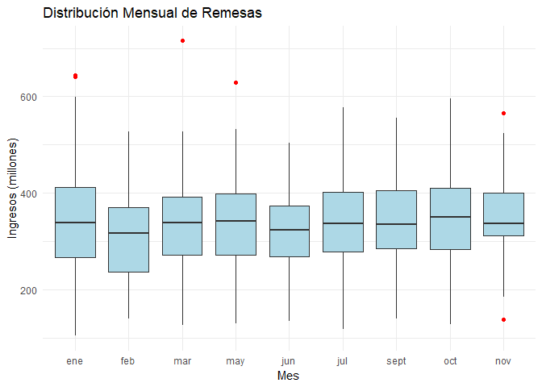
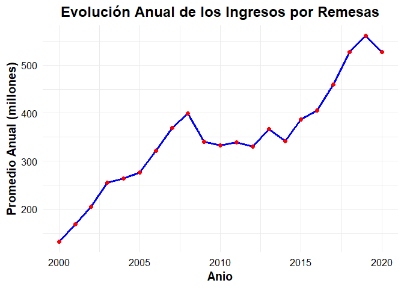

2 Preparación de los Datos
La base de datos contiene información sobre los ingresos de remesas mensuales en Colombia desde el Anio 2000. Los datos han sido limpiados para corregir inconsistencias en el formato de las fechas.
Vamos a cambiar el formato de fecha
Code
## # A tibble: 6 × 2
## Fecha Remesas
## <dttm> <dbl>
## 1 2000-01-01 00:00:00 104.
## 2 2000-02-01 00:00:00 146.
## 3 2000-03-01 00:00:00 125.
## 4 2000-01-01 00:00:00 116.
## 5 2000-05-01 00:00:00 129.
## 6 2000-06-01 00:00:00 134.Verificar si existen valores faltantes
## [1] 0No existen valores faltantes en la serie
2.1 Análisi exploratorio de los datos
## Min. 1st Qu. Median Mean 3rd Qu. Max.
## 103.8 270.9 338.6 342.1 398.9 715.9## [1] 0El análisis del resumen estadístico muestra que los ingresos por remesas varían significativamente, con un valor mínimo de 103.8 millones y un máximo de 715.9 millones. La mediana de 338.6 millones, cercana al promedio de 342.1 millones, sugiere una distribución relativamente simétrica, aunque los valores en el tercer cuartil (398.9 millones) indican un sesgo hacia montos más altos. Este rango refleja un crecimiento sostenido en las remesas a lo largo del tiempo, con picos que podrían estar relacionados con períodos específicos de mayor envío, como crisis económicas o variaciones en la migración. Además, la ausencia de valores faltantes garantiza la integridad del análisis.
2.2 Evolución de la serie de Remesas
Code
ggplot(df, aes(x = Fecha, y = Remesas)) +
geom_line(color = "blue", linewidth = 1) + # Usar `linewidth` en lugar de `size` para líneas
labs(
title = "Evolución de los Ingresos de Remesas",
x = "Anio",
y = "Ingresos (millones)"
) +
theme_minimal(base_size = 15) + # TamAnio de fuente mejorado
theme(
plot.title = element_text(hjust = 0.5, face = "bold"), # Centrar y resaltar el título
axis.text = element_text(color = "black"), # Texto de los ejes en negro
axis.title = element_text(face = "bold") # Resaltar títulos de ejes
)
El gráfico muestra una clara tendencia ascendente en los ingresos por remesas en Colombia desde el Anio 2000 hasta 2020, reflejando un crecimiento sostenido en el tiempo. Se observan fluctuaciones estacionales regulares, con picos recurrentes que podrían coincidir con períodos específicos del Anio, como festividades o ciclos económicos. A partir de 2015, el crecimiento se intensifica, alcanzando valores máximos históricos en 2020, posiblemente debido a factores externos como crisis económicas globales que incentivaron el envío de remesas. La tendencia general sugiere que las remesas son una fuente económica cada vez más importante para el país.
2.3 Análisis Estacionalidad
Code
 La descomposición de la serie temporal muestra tres componentes clave: la tendencia, la estacionalidad y los residuos. La tendencia evidencia un crecimiento sostenido en los ingresos por remesas desde el Anio 2000, con una aceleración notable a partir de 2015. El componente estacional muestra un patrón cíclico recurrente, indicando variaciones regulares en los ingresos a lo largo del Anio, posiblemente vinculadas a eventos como festividades o períodos específicos de mayor envío. Los residuos son relativamente pequeños y están distribuidos de manera uniforme, lo que sugiere que el modelo capta adecuadamente la mayoría de los patrones de la serie. Este análisis confirma que los ingresos por remesas han seguido una trayectoria positiva y predecible, con pequeñas fluctuaciones impredecibles.
2.4 Visualización comparativa mensual
Code
# Crear una columna de mes
df <- df %>% mutate(Mes = month(Fecha, label = TRUE, abbr = TRUE))
# Gráfico tipo boxplot por mes
ggplot(df, aes(x = Mes, y = Remesas)) +
geom_boxplot(fill = "lightblue", outlier.colour = "red") +
labs(title = "Distribución Mensual de Remesas",
x = "Mes",
y = "Ingresos (millones)") +
theme_minimal()
El gráfico de cajas muestra la distribución mensual de los ingresos por remesas, revelando variaciones en su comportamiento a lo largo del Anio. Aunque la mediana y los rangos intercuartílicos son relativamente estables entre meses, algunos como marzo, mayo y noviembre destacan por presentar valores atípicos superiores (puntos rojos), indicando ingresos excepcionalmente altos en esos meses. Esto podría estar relacionado con factores estacionales o eventos específicos que impulsan el envío de remesas. La variabilidad es ligeramente mayor en los meses mencionados, mientras que en otros como junio, julio y septiembre se observa una distribución más compacta y consistente. Estos patrones podrían ser útiles para anticipar períodos de mayor flujo económico por remesas.
2.5 Análisis de tendencias Anuales
Code
df_anual <- df %>%
mutate(Anio = year(Fecha)) %>% # Extraer el Anio de la columna Fecha
group_by(Anio) %>% # Agrupar por Anio
summarise(Promedio_Anual = mean(Remesas, na.rm = TRUE)) # Calcular promedio anual
# Gráfico de la evolución anual
ggplot(df_anual, aes(x = Anio, y = Promedio_Anual)) +
geom_line(color = "blue", linewidth = 1.2) + # Línea de tendencia
geom_point(color = "red", size = 2) + # Puntos destacados para cada Anio
labs(
title = "Evolución Anual de los Ingresos por Remesas",
x = "Anio",
y = "Promedio Anual (millones)"
) +
theme_minimal(base_size = 15) + # Tema limpio con fuente mejorada
theme(
plot.title = element_text(hjust = 0.5, face = "bold"), # Centrar y resaltar título
axis.text = element_text(color = "black"), # Texto de ejes en negro
axis.title = element_text(face = "bold") # Resaltar títulos de ejes
)
El gráfico muestra una tendencia ascendente en el promedio anual de ingresos por remesas desde el Anio 2000 hasta 2020. Durante los primeros Anios de la serie (2000-2005), se observa un crecimiento moderado pero constante. A partir de 2005, el crecimiento se acelera, aunque entre 2010 y 2015 el aumento es más estable, lo que podría estar relacionado con factores económicos globales o locales. Sin embargo, desde 2015 hasta 2019, el promedio anual experimenta un incremento significativo, alcanzando un máximo histórico cercano a los 550 millones en 2019. En 2020, se observa una leve disminución, posiblemente atribuible a factores excepcionales como la pandemia de COVID-19. Este análisis confirma la importancia creciente de las remesas como fuente de ingresos, con un patrón general de fortalecimiento sostenido a lo largo del tiempo.
Conclusiones
Se identificó una clara tendencia ascendente en las remesas, con picos en ciertos meses como marzo, mayo y noviembre, probablemente asociados a factores estacionales o eventos específicos. La descomposición de la serie temporal mostró un patrón estacional recurrente y una tendencia al alza que se intensificó a partir de 2015. Además, el análisis anual confirmó este crecimiento, alcanzando máximos históricos en 2019, aunque con una leve disminución en 2020, posiblemente por la pandemia. En general, el comportamiento de las remesas refleja su creciente importancia para la economía, con ciclos estacionales y un patrón a largo plazo que sugiere estabilidad y resiliencia frente a cambios globales